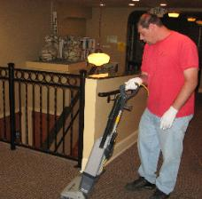
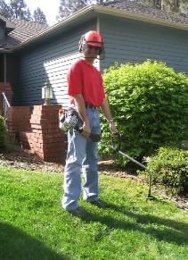
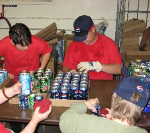

Services offered
-
Mobile Janitorial

Our janitorial crews provide custodial services for both private individuals and businesses within the Spokane Community. Our crews provide a professional level of cleaning.
Appointments can be arranged for weekly or monthly services, or on a when-needed basis. -
Mobile Landscaping

Ready to hand over that pesky task of lawn maintenance to someone else? Our mobile landscaping crew provides a variety of general landscaping and lawn care services for both private and commercial members of the Spokane community.
Appointments can be arranged for weekly or monthly services, or on a when-needed basis. -
Marketing
We provide services to business and individuals of Spokane to assist with marketing endeavors.
Our agency has crews available to deliver marketing materials door to door in areas of the customer's choosing. Also, if needed, we have crews available for labor involved in preparing marketing materials for delivery (folding, stuffing in plastic sleeves, etc.). -
Production

Our agency has crews available for various production work. These tasks include, but are not limited to light assembly work, sorting and cleaning product and other various production tasks.
-
Vending
Do you need snack or beverage vending machines for your business? Artisan's offers vending services for businesses within the Spokane community. Our vending services include machine placement, stocking of products and machine maintenance as needed.
We offer placement of both beverage and snack machines. Our beverage machines offer a selection of Pepsi products and our snack machines offer a variety of snacks.
Snack machines are available in various sizes to meet your need. Selection of products in machines are tailored for each customer. -
Place Holder
Put whatever you want here
Appointments can be arranged for weekly or monthly services, or on a when-needed basis.